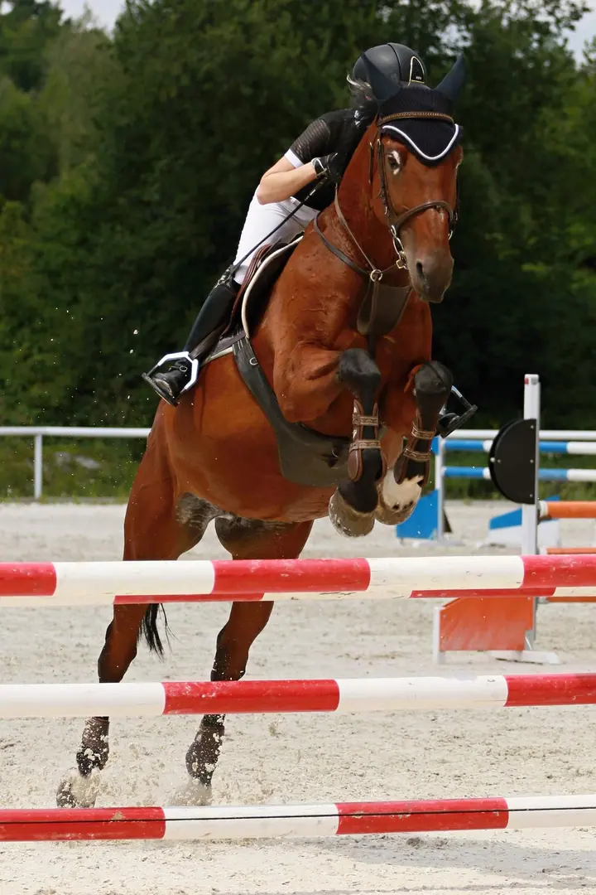
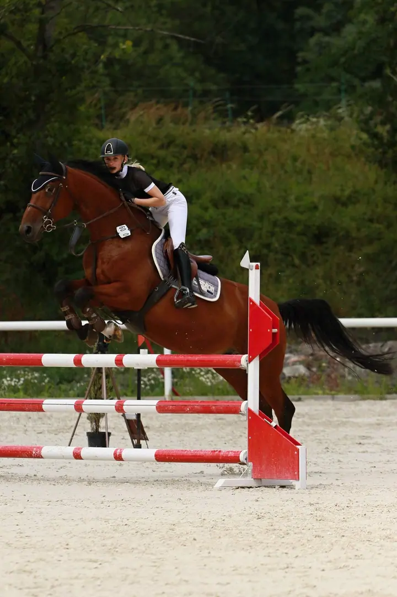
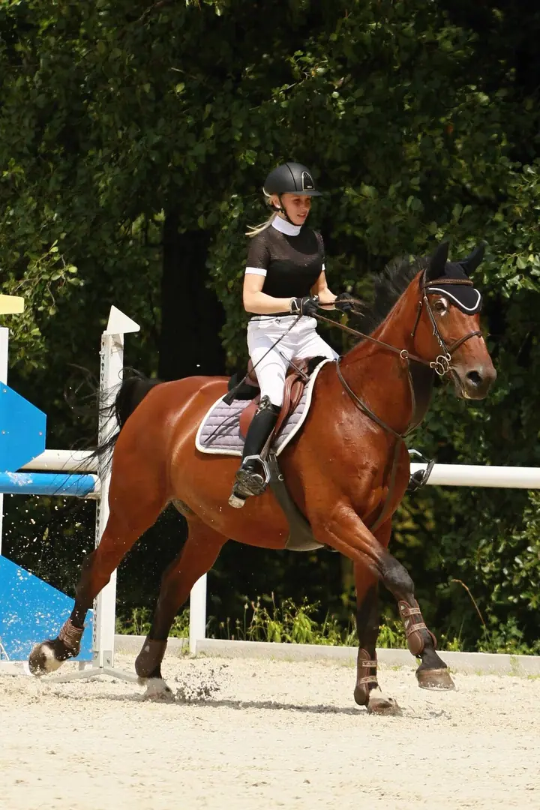
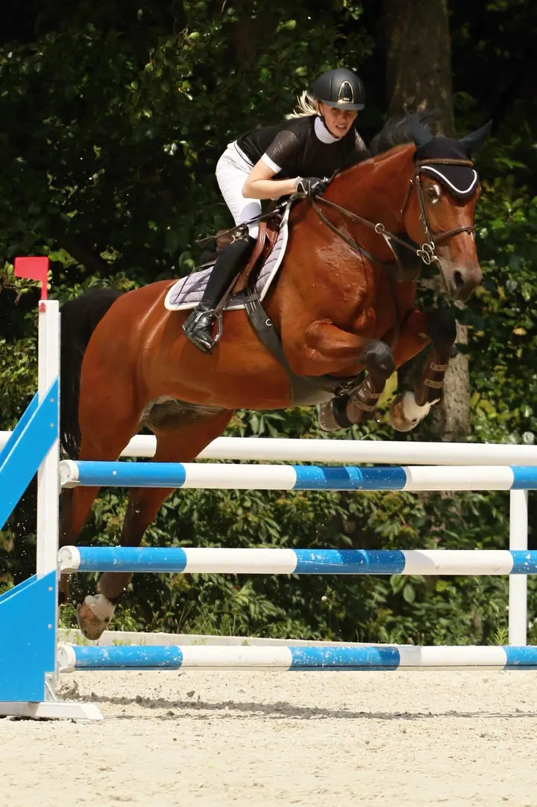
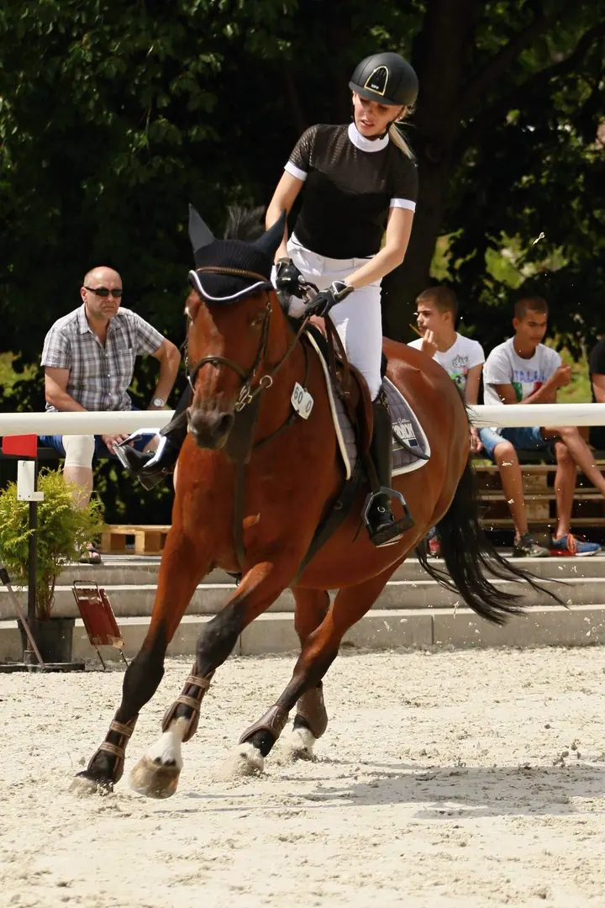

01 / 02
Focení na závodech
Přijedu na parkurové závody a fotím koně a jezdce na kolbišti, ve skoku i mezi překážkami. Napište mi, na které závody se chystáte, a domluvíme se.
Zeptat se na termín→








Fotografka koní, kterou najdete na zemi
Zeptat se na termín →(01) Ahoj
Jmenuji se Kateřina Elsnicová, ale klidně mi říkejte Káťa. Fotím koně a jezdce na parkurových závodech , ve skoku i v cvalu mezi překážkami . Fotky si pak můžete objednat v plném rozlišení a bez copyrightu .
(02) Co fotím
01 / 02
Přijedu na parkurové závody a fotím koně a jezdce na kolbišti, ve skoku i mezi překážkami. Napište mi, na které závody se chystáte, a domluvíme se.
Zeptat se na termín→Dále nabízím
Fotky bez copyrightu a v plném rozlišení si můžete objednat e-mailem za symbolických 10 Kč za kus. Platí se převodem na účet.
↗(04) Postup
Od první zprávy po hotovou galerii.
Krok 1 z 4
Napište mi e-mailem, na které závody jedete a kdy. Ráda se přijedu podívat a fotit.
Krok 2 z 4
Fotím vaše parkurové kolo od nástupu až po poslední skok, z místa, odkud je kůň vidět nejlépe.
Krok 3 z 4
Fotky s copyrightem zveřejním v galerii, kde si je pro soukromé účely můžete volně stáhnout.
Krok 4 z 4
Vybrané fotky bez copyrightu objednáte e-mailem. Za každou zaplatíte 10 Kč převodem na účet a já vám je pošlu.

Každý skok trvá jen zlomek vteřiny.
(05) Za objektivem
Jsem Káťa a nejraději fotím koně při práci: na kolbišti, nad překážkou, ve chvíli, kdy se odráží nebo doskakuje. V mé galerii najdete přes tři tisíce fotek ze závodů a pořád přibývají další.
Mám jedno motto, se kterým naprosto souhlasím: fotografa koní hledejte hlavně na zemi. Kůň a jezdec jsou na fotce hlavní, já jsem ta, která klečí u překážky a čeká na správný moment.
Fotky s copyrightem si majitelé koní a vyfocení jezdci mohou pro soukromé účely stáhnout volně. Když je chcete použít na web nebo Facebook, stačí mi napsat. Povolení dám všem, jen chci vědět, kde moje fotky budou.
Kateřina
Kateřina Elsnicová · Fotografka koní a parkurových závodů
Fotografie bez copyrightu a v plném rozlišení stojí symbolických 10 Kč za kus. Platba je převodem na účet.
Ano. Fotky s copyrightem si majitelé koní a vyfocení jezdci mohou pro soukromé účely stahovat volně.
Můžete, jen mi to prosím předem napište na e-mail. Povolení dám všem, chci jen vědět, kde fotky budou.
Malé množství posílám e-mailem. Větší množství vypálím na CD a pošlu Českou poštou, k ceně pak připočítám 10 Kč za CD a 25 Kč poštovné.
(07) Kontakt
Napište pár vět o tom, co si představujete, a termín, který se vám hodí.
elsnicova.k@seznam.cz